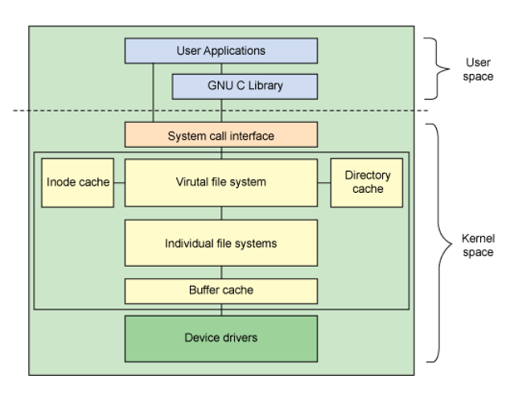

/proc
이 디렉토리는 현재 시스템에서 실행되는 프로세스들에 대한 정보를 제공하기 위해 OS 에서 제공하는 가상의 파일시스템 입니다. 그러니까 실제 파일이 존재하는 것이 아닙니다. 커널이 가지고 있는 정보는 사용자 프로그램에서 직접 접근할 수가 없으므로 system call 을 통해 제공하는 방법도 생각해 볼 수 있겠으나 프로세스가 가지는 자료구조를 생각할때 사용자가 쉽게 사용할 수 있도록 메모리상에 가상의 파일 시스템을 만들어서 구조적으로 제공하는 것입니다. 각각의 파일은 커널 내부의 특정 함수와 연결되어 있어서 read 하면 실시간으로 해당 정보가 표시됩니다. ( 메모리 이므로 속도가 빠릅니다 ).
이와 같은 정보제공 방법이 유용한 점이 많기 때문에 지금은 프로세스 정보뿐만 아니라 커널이 가지고 있는 여러가지 시스템 관련 정보도 /proc 를 통해 제공하고 있고 커널 파라미터 값을 write 을 통해 변경할 수도 있습니다.
# `ps` 명령은 모든 정보를 /proc 를 이용해 표시합니다.
$ strace -e openat ps |& grep /proc/
openat(AT_FDCWD, "/proc/self/auxv", O_RDONLY) = 3
openat(AT_FDCWD, "/proc/sys/kernel/osrelease", O_RDONLY) = 3
openat(AT_FDCWD, "/proc/self/auxv", O_RDONLY) = 3
openat(AT_FDCWD, "/proc/self/stat", O_RDONLY) = 3
openat(AT_FDCWD, "/proc/uptime", O_RDONLY) = 3
openat(AT_FDCWD, "/proc/sys/kernel/pid_max", O_RDONLY) = 4
. . .
----------------------------------------------------
# vmstat 명령
$ strace -e openat vmstat |& grep /proc/
openat(AT_FDCWD, "/proc/self/auxv", O_RDONLY) = 3
openat(AT_FDCWD, "/proc/sys/kernel/osrelease", O_RDONLY) = 3
openat(AT_FDCWD, "/proc/self/auxv", O_RDONLY) = 3
openat(AT_FDCWD, "/proc/sys/kernel/osrelease", O_RDONLY) = 3
openat(AT_FDCWD, "/proc/meminfo", O_RDONLY) = 3
openat(AT_FDCWD, "/proc/stat", O_RDONLY) = 4
openat(AT_FDCWD, "/proc/vmstat", O_RDONLY) = 5
# netstat 명령
$ strace -e openat netstat |& grep /proc/
openat(AT_FDCWD, "/proc/filesystems", O_RDONLY|O_CLOEXEC) = 3
openat(AT_FDCWD, "/proc/net/tcp", O_RDONLY) = 3
openat(AT_FDCWD, "/proc/net/tcp6", O_RDONLY) = 3
openat(AT_FDCWD, "/proc/net/sctp/eps", O_RDONLY) = -1 ENOENT (No such file or directory)
openat(AT_FDCWD, "/proc/net/sctp6/eps", O_RDONLY) = -1 ENOENT (No such file or directory)
. . .
# /proc 를 사용 중인 프로세스들
$ ps f $( fuser -m /proc 2> /dev/null )
. . .
/proc 디렉토리를 ls 했을때 보이는 숫자로된 디렉토리가 현재 시스템에서 실행되고 있는 프로세스들입니다. 예를 들어 현재 bash shell 프로세스와 관련된 정보를 보려면 다음과 같이 하면 됩니다.
# '$$' 는 현재 shell pid 를 나타내는 특수변수 입니다.
$ ls -l /proc/$$/
total 0
dr-xr-xr-x 2 mug896 mug896 0 2017-02-18 04:48 attr/
-rw-r--r-- 1 mug896 mug896 0 2017-02-18 04:48 autogroup
-r-------- 1 mug896 mug896 0 2017-02-18 04:48 auxv
-r--r--r-- 1 mug896 mug896 0 2017-02-18 04:48 cgroup
--w------- 1 mug896 mug896 0 2017-02-18 04:48 clear_refs
-r--r--r-- 1 mug896 mug896 0 2017-02-18 04:48 cmdline
. . .
# 현재 shell 프로세스가 가지고 있는 file descriptors
$ ls -l /proc/$$/fd/
total 0
lrwx------ 1 mug896 mug896 64 2017-02-18 05:06 0 -> /dev/pts/2
lrwx------ 1 mug896 mug896 64 2017-02-18 05:06 1 -> /dev/pts/2
lrwx------ 1 mug896 mug896 64 2017-02-18 05:06 2 -> /dev/pts/2
lrwx------ 1 mug896 mug896 64 2017-02-18 05:06 255 -> /dev/pts/2
다음과 같이하면 현재 libcairo.so 라이브러리를 사용 중인 프로세스 목록을 볼 수 있습니다.
$ sudo grep libcairo.so /proc/[1-9]*/maps
현재 시스템에 생성되어 있는 전체 스레드의 waiting channel ( 스레드가 block 상태에 있는 커널 함수 ) 통계.
$ for tid in /proc/[1-9]*/task/*; do cat $tid/wchan; echo; done |
sort -n | uniq -c | sort -nr
739 futex_wait_queue_me
365 0 # 값이 0 인것은 현재 wait 상태가 아님
272 do_poll.constprop.0
87 ep_poll
20 do_select
13 __skb_wait_for_more_packets $ sudo cat /proc/$$/task/$$/stack
8 pipe_read [<0>] do_wait+0x1ae/0x220
7 do_wait [<0>] kernel_wait4+0xaf/0x150
5 fuse_dev_do_read [<0>] __do_sys_wait4+0x84/0x90
3 unix_stream_data_wait [<0>] __x64_sys_wait4+0x1e/0x20
1 hrtimer_nanosleep [<0>] do_syscall_64+0x49/0xc0
1 do_signal_stop [<0>] entry_SYSCALL_64_after_hwframe+0x44/0xa9
/proc/[1-9]*/stat 을 이용해 gdm3 프로세스의 자손 프로세스들을 출력.
# $1 는 PID, $4 는 PPID
$ awk -v PPID=`pidof gdm3` -v FPAT='[^ ]+|\\([^\\)]*\\)' '
{ a[$1] = $4 } END{ print PPID; desc(PPID) }
function desc( ppid, i) {
for ( i in a ) { if ( a[i] == ppid ) { print i; desc(i) }}
}
' /proc/[1-9]*/stat | xargs ps f
PID TTY STAT TIME COMMAND
1492 ? Ssl 0:00 /usr/sbin/gdm3
1498 ? Sl 0:00 \_ gdm-session-worker [pam/gdm-autologin]
1531 tty2 Ssl+ 0:00 \_ /usr/libexec/gdm-x-session --register-session ...
1533 tty2 Sl+ 28:21 \_ /usr/lib/xorg/Xorg vt2 -displayfd 3 ...
1640 tty2 Sl+ 0:00 \_ /usr/bin/startplasma-x11
1745 ? Ss 0:00 \_ /usr/bin/ssh-agent /usr/bin/im-launch ...
/proc/self
/proc/self 는 심볼릭링크 인데 항상 프로세스 자신의 PID 번호에 연결되어 있습니다.
그러므로 프로세스 자신의 정보를 구하려고 할경우 따로 PID 를 알아낼 필요없이
/proc/self 를 이용하면 됩니다.
/dev 디렉토리에 존재하는 fd, stdin, stdout, stderr 도 모두 /proc/self 와 연결된 링크로
shell script 를 작성할 때 유용하게 사용할 수 있습니다.
/dev/fd -> /proc/self/fd
/dev/stdin -> /proc/self/fd/0
/dev/stdout -> /proc/self/fd/1
/dev/stderr -> /proc/self/fd/2
# 예를 들어 ls 명령을 실행하면 self 는 ls 프로세스가 되고
# date 명령을 실행하면 self 는 date 프로세스가 됩니다.
# 따라서 다음은 ls 명령의 현재 fd 를 조회하는 것과 같습니다.
$ ls -l /dev/fd/ # 또는 ls -l /proc/self/fd/
total 0
lrwx------ 1 mug896 mug896 64 2020-03-20 19:09 0 -> /dev/pts/7
lrwx------ 1 mug896 mug896 64 2020-03-20 19:09 1 -> /dev/pts/7
lrwx------ 1 mug896 mug896 64 2020-03-20 19:09 2 -> /dev/pts/7
lr-x------ 1 mug896 mug896 64 2020-03-20 19:09 3 -> /proc/8300/fd/ # ls 명령 PID
# parent process 의 FD 설정은 child process 에게 상속되므로
# 다음과 같이 shell 에서 설정한 FD 값은 `ls -l /dev/fd/` 출력에도 나타납니다.
$ exec 9<> /dev/null
$ ls -l /proc/$$/fd/
total 0
lrwx------ 1 mug896 mug896 64 2020-03-20 21:02 0 -> /dev/pts/7
lrwx------ 1 mug896 mug896 64 2020-03-20 21:02 1 -> /dev/pts/7
lrwx------ 1 mug896 mug896 64 2020-03-20 21:02 2 -> /dev/pts/7
lrwx------ 1 mug896 mug896 64 2020-03-20 21:02 255 -> /dev/pts/7
lrwx------ 1 mug896 mug896 64 2020-03-20 21:03 9 -> /dev/null <--- 9 번
# parent process 인 bash shell 에서 설정한 FD 값이 상속되어 ls 프로세스에서도 보인다.
$ ls -l /dev/fd/
total 0
lrwx------ 1 mug896 mug896 64 2020-03-20 21:03 0 -> /dev/pts/7
lrwx------ 1 mug896 mug896 64 2020-03-20 21:03 1 -> /dev/pts/7
lrwx------ 1 mug896 mug896 64 2020-03-20 21:03 2 -> /dev/pts/7
lr-x------ 1 mug896 mug896 64 2020-03-20 21:03 3 -> /proc/20976/fd/
lrwx------ 1 mug896 mug896 64 2020-03-20 21:03 9 -> /dev/null <--- 9 번
/proc 가 가지는 또 한가지 기능은 파일 시스템을 통해 직접 커널의 옵션 설정을 변경할수 있다는 것입니다. 하지만 설정이 저장되는 것은 아니므로 시스템을 다시 시작하면 기존 값으로 돌아갑니다. 다음은 icmp echo 와 관련된 옵션 설정을 /proc 를 통해서 하는 예입니다.
# icmp_echo_ignore_all 은 ping 명령에 대한 응답 여부를 설정하는 옵션입니다.
# 값이 0 일 경우는 OFF 를, 1 은 ON 을 나타냅니다.
# www.naver.com, www.daum.net 같은 경우 ping 을 했을때 응답을 볼수가 없으므로
# icmp_echo_ignore_all 값이 1 로 설정되어 있다고 할 수 있습니다.
$ cat /proc/sys/net/ipv4/icmp_echo_ignore_all
0
$ sudo sh -c 'echo 1 > /proc/sys/net/ipv4/icmp_echo_ignore_all'
$ cat /proc/sys/net/ipv4/icmp_echo_ignore_all
1
-------------------------------------------------------------
# 다음은 sysctl 명령을 이용한 설정 방법입니다.
# /proc/sys/ 를 제외하고 '/' 를 '.' 로 변경하여 사용하면 됩니다.
$ sysctl net.ipv4.icmp_echo_ignore_all
net.ipv4.icmp_echo_ignore_all = 0
$ sudo sysctl -w net.ipv4.icmp_echo_ignore_all=1
net.ipv4.icmp_echo_ignore_all = 1
$ sysctl net.ipv4.icmp_echo_ignore_all
net.ipv4.icmp_echo_ignore_all = 1
# 재부팅 후에도 적용되게 하려면 다음과 같이 /etc/sysctl.conf 파일에 추가합니다.
$ echo net.ipv4.icmp_echo_ignore_all = 1 | sudo tee -a /etc/sysctl.conf
/proc 디렉토리 구조에 대한 자세한 설명은
man 5 proc로 볼 수 있습니다.
시스템 전체 디렉토리 구조에 대한 설명은man 7 hier입니다.
/sys
/sys 디렉토리는 /proc 이후에 생긴 가상 파일 시스템입니다. 원래 /proc 는 프로세스 정보와 ps, top, free 같은 몇몇 시스템 유틸리티가 사용하는 정보를 제공하는 게 목적으였으나 사용상의 이점으로 인해 무작위로 시스템 관련 정보를 제공하다 보니 일종의 dumping ground 가 되어서 나중에 device, system 관련 정보를 좀 더 구조적으로 제공하기 위해 만든 것이 /sys 디렉토리 입니다. 기존 legacy 시스템 정보는 아직 /proc 를 통해서 접근할 수 있으나 새로 추가되는 device, system 관련 정보는 /sys 를 통해서 제공됩니다.
# /proc, /sys 디렉토리에 있는 항목들은 대부분 cat 명령으로 read 가 가능합니다.
# 다음 함수는 특정 디렉토리에 존재하는 항목들을 일괄 cat 출력해 줍니다. ( -r 옵션은 recursive )
syscat() {
local recursive=false file arg
local cmd='echo "\e[36m[ {} ]\e[0m"; \
echo "$(timeout 1 cat "{}" | tr -cd "[[:print:]\t\n]")"'
for arg; do [ "$arg" = "-r" ] && { recursive=true; break; }; done
if $recursive; then
for arg do shift; [ "$arg" = "-r" ] && continue; set -- "$@" "$arg"; done
sudo -E find "$@" \( -path "*/tracing" -o -path "*/debug" \) -prune -o \
! -type d,l -exec sh -c "$cmd" \; 2> /dev/null
else
test $# = 1 -a -d "$1" && set -- "${1%/}"/*
for file; do test -f "$file" &&
sudo -E find "$file" -exec sh -c "$cmd" \;
done
fi
}
# 블록 디바이스인 /dev/sda 디스크 정보를 출력
$ syscat /sys/block/sda/queue
. . .
[ minimum_io_size ]
512
[ nr_zones ]
0
[ write_same_max_bytes ]
0
[ max_segments ]
168
[ dax ]
0
[ physical_block_size ]
512
[ logical_block_size ]
512
[ zone_append_max_bytes ]
0
[ io_timeout ]
30000
. . .
다음은 /sys 디렉토리를 이용해서 현재 사용중인 cpu core 를 disable 하는 예입니다. 네트워크 카드나 마우스 인터럽트를 처리 중인 core 를 disable 하면 해당 처리가 다른 core 로 옮겨가는 것을 볼 수 있습니다. 또한 cpu0 은 disable 할 수 없습니다 ( 기본적으로 APIC 가 인터럽트를 cpu0 으로 전달합니다. ) [ interrupt 조회방법 ]
$ ls /sys/devices/system/cpu
cpu0/ cpu3/ cpu6/ cpuidle/ microcode/ vulnerabilities/ modalias possible
cpu1/ cpu4/ cpu7/ hotplug/ power/ isolated offline present
cpu2/ cpu5/ cpufreq/ intel_pstate/ smt/ kernel_max online uevent
# online 값이 1 이면 현재 사용중인 상태
$ cat /sys/devices/system/cpu/cpu6/online
1
# 0 으로 설정하여 cpu6 을 offline 상태로 만듭니다.
$ echo 0 | sudo tee /sys/devices/system/cpu/cpu6/online
0
$ grep processor /proc/cpuinfo
processor : 0
processor : 1
processor : 2
processor : 3
processor : 4
processor : 5 <------- processor 6 번이 제거됨
processor : 7
/dev
/proc 가 커널이 가지고 있는 프로세스와 시스템 관련 정보를 사용자에게 제공하는게 목적이라면 어떻게 하면 커널이 관리하는 장치들을 사용자에게 제공할수 있을까에 대한 해결책이 /dev 디렉토리 입니다. 이 디렉토리는 /proc 와 달리 가상의 파일 시스템이 아니고 mknod 명령으로 직접 장치파일을 만듭니다. 생성된 장치파일은 꼭 /dev 디렉토리에 위치할 필요는 없고, 일반 파일들과 똑같이 mv, rm, cp -R, rename 을 할 수 있습니다. 또한 사용자 프로그램에서 장치파일을 사용하는 방법도 일반 파일과 같습니다.
/dev 디렉토리를 ls 해 보면 파일 사이즈 대신에 두개의 숫자가 , 로
구분되어 표시되는 것을 볼 수 있는데요 각각 major number, minor number 라고 합니다.
파일을 오픈 했을때 이 번호로 커널은 어떤 장치 드라이버를 사용해야 될지 알 수 있습니다.
그러니까 장치파일의 이름은 실질적으로 중요하지 않고 임의로 만들수 있습니다.
터미널 프로그램을 몇개 오픈한뒤 ls -l /dev/pts/ 해보면 장치 파일들이 새로 생성된걸 볼 수 있는데
minor number 가 모두 다른 것을 알 수 있습니다.
major number 가 장치 드라이버를 나타낸다면 minor number 는 이렇게
같은 장치 드라이버를 사용하지만 구분하기 위한 용도로 사용됩니다.
컴퓨터에서 사용되는 장치들을 두가지로 분류해 볼 수 있는데요.
데이터에 접근할때 random access 를 할 수 있는 장치와 그렇지 않은 장치입니다.
첫번째의 경우를 block device 라고 하고 디렉토리 퍼미션의 첫번째 문자가 b 로 표시됩니다.
두번째는 character device 라고 하며 c 로 표시됩니다.
# block device 만 출력
$ find /dev -type b -exec ls -l {} \;
# character device 만 출력
$ find /dev -type c -exec ls -l {} \;
Character device
character device 는 데이터가 1 byte 크기의 character by character 로 전달되고 random access 를 할 수 없는 장치입니다. 데이터가 전달될 때 커널이 사용하는 버퍼를 거치지 않고 바로 장치에 전달됩니다. 키보드키를 하나 누르면 바로 문자가 표시되고 마우스를 움직이면 바로 포인터가 움직이는데 모두 character device 입니다. 사실 디스크와 관련된 장치를 제외하고 대부분의 장치가 character device 입니다.
- 마우스 : /dev/input/
- 그래픽 : /dev/dri/
- 사운드 : /dev/snd/
- 터미널 : /dev/tty*, /dev/pts/*
/dev/tty
/dev/tty 는 프로세스의 controlling terminal 과 동일합니다. 다시말해 현재 ctty 가 /dev/pts/1 이라면 /dev/tty 도 /dev/pts/1 라고 할 수 있습니다. 어떤 프로세스가 /dev/tty 를 open 하는데 실패하였다면 ctty 를 갖고있지 않다고 할 수 있습니다. standard stream 이 모두 redirect 되어있다고 하더라도 /dev/tty 로 출력하면 터미널로 출력할 수 있고 또한 /dev/tty 를 이용해 터미널로부터 입력을 받을 수 있습니다.
Block device
하드디스크, CD-ROM, USB 메모리 같이 random access 를 할 수 있는 장치가 block device 에 해당합니다. block device 는 커널이 관리하는 버퍼를 이용하고 block 단위로 ( 보통 512 bytes ) 데이터가 전달됩니다. character device 와 block device 는 내부적으로 처리하는 방식이 다르기 때문에 하나의 물리 장치에 두 가지의 장치 파일을 제공하기도 합니다. 또한 버퍼 캐시를 이용하는 것이 실제 데이터가 장치에 쓰여지는 순서나 가시성에 영향을 줄 수 있다고 하여 아예 character device 만 제공하는 OS 도 있습니다.
/dev/sda[번호] # 하드디스크
/dev/ram[번호] # ramdisk 를 만들때 사용
/dev/loop[번호] # iso 이미지 파일을 마운트 할때 사용
Pseudo devices
Pseudo devices 는 실제 물리 장치에 연결되어 있는것은 아니고
커널에서 제공하는 하나의 기능으로 보면 되겠습니다.
/dev/null 은 shell script 에서도 많이 사용됩니다.
/dev/null: 이 장치에 쓰기를 할경우 입력되는 데이터는 모두 사라지고 쓰기 성공이 반환됩니다. 블랙홀과 같은 존재입니다. 보통 명령 실행시 원하는지 않는 data stream 을 여기로 보냅니다. 읽을경우 End-Of-File 상태를 리턴합니다.
$ cpp -dM /dev/null # End-Of-File: 모든 predefined macros 를 출력
#define __SSP_STRONG__ 3
#define __DBL_MIN_EXP__ (-1021)
#define __FLT32X_MAX_EXP__ 1024
. . .
/dev/zero: 읽을경우 연속된 NUL 문자가 제공되므로 보통 데이터 스토리지를 초기화 할때 사용합니다. 쓰기를 할경우 /dev/null 과같이 블랙홀 역할을 합니다.
# 다음과 같이 하면 해당 파티션 데이터가 실질적으로 모두 삭제되어 복구할수 없게 됩니다.
$ dd if=/dev/zero of=/dev/<destination partition>
/dev/urandom: 연속된 pseudo random numbers 를 제공합니다./dev/full: 이 장치에 쓰기를 할경우 항상 ENOSPC (No space left on device) error code 를 반환합니다. 그러므로 보통 프로그램에서 disk full 상태를 테스트 할때 사용됩니다. 읽을경우 연속된 NUL 문자가 제공됩니다.
$ echo 111 > /dev/full
bash: echo: write error: No space left on device
$ echo $?
1
Architectural view of the Linux file system components

Quiz
디렉토리의 권한이 drwxrwxrwx 이면 누구나 들어와서 파일을 생성하고 쓸 수가 있습니다.
하지만 다른 사용자의 파일도 삭제할 수가 있기 때문에 임시 디렉토리를 만들 때는
sticky bit 을 붙여서 삭제를 방지합니다(.......rwt).
shell 에서 임시로 사용할 수 있는 디렉토리에는 /tmp, /var/tmp, /dev/shm 가 있는데
각각 어떤 차이가 있을까요?
# 디렉토리에 모두 sticky bit 이 설정되어 있어서 다른 사용자의 파일은 삭제할 수 없다.
$ ls -ld /tmp /var/tmp /dev/shm
drwxrwxrwt 2 root root 40 2019-04-20 18:42 /dev/shm/
drwxrwxrwt 18 root root 4096 2019-04-20 18:41 /tmp/
drwxrwxrwt 7 root root 4096 2019-04-20 18:22 /var/tmp/
먼저 /tmp 와 /var/tmp 는 disk 에 존재하는 디렉토리 입니다.
차이점은 /tmp 는 reboot 이 되면 내용이 사라지지만 /var/tmp 의 경우는 삭제되지 않고 남아 있습니다.
따라서 reboot 후에도 데이터가 보존되어야 할 경우는 ( 예를 들면 cache 데이터 )
/var/tmp 디렉토리를 이용해야 합니다.
마운트 할 때 파일시스템 타입으로 tmpfs 을 사용하면 가상주소를 사용하는 메모리로 마운트가 됩니다.
/dev/shm 의 경우 보통 물리 메모리의 50% 크기로 설정이 되는데 ramdisk 같이 처음부터 이 크기가
모두 사용되는 것이 아니고 가상주소 시스템을 이용해서 필요한 만큼만 사용하게 됩니다.
/dev/shm ( shared memory ) 이름에서도 알 수 있듯이 프로세스 간에 빠른 데이터 공유가
필요할때 사용할 수 있습니다. 메모리이므로 reboot 후에는 삭제됩니다.
$ df -h | grep tmpfs
tmpfs 1.6G 1.6M 1.6G 1% /run
tmpfs 7.8G 176M 7.7G 3% /dev/shm
tmpfs 5.0M 4.0K 5.0M 1% /run/lock
tmpfs 7.8G 0 7.8G 0% /sys/fs/cgroup
tmpfs 1.6G 32K 1.6G 1% /run/user/1000
------------------------------------------------------
$ grep Shmem: /proc/meminfo
Shmem: 543796 kB
# /dev/shm 디렉토리에 100M 크기 파일 생성
$ dd bs=$(( 2**20 )) count=100 < /dev/zero > /dev/shm/hello
100+0 records in
100+0 records out
104857600 bytes (105 MB, 100 MiB) copied, 0.043056 s, 2.4 GB/s
$ grep Shmem: /proc/meminfo
Shmem: 646196 kB
$ rm -f /dev/shm/hello
$ grep Shmem: /proc/meminfo
Shmem: 541804 kB
2 .
현재 사용 가능한 cpu 개수를 알려면 어떻게 할까요?
$ nproc
8
# nproc 명령은 coreutils 패키지에 포함된 명령입니다.
$ dpkg -S /usr/bin/nproc
coreutils: /usr/bin/nproc
# coreutils 패키지에 포함된 명령들을 보려면
$ dpkg -L coreutils
3 .
df 명령을 이용하면 마운트된 파일 시스템별로 디스크 사용량을 볼 수 있는데요.
특정 경로가 어떤 파일 시스템에 속하는지 마운트 정보는 어떻게 알 수 있을까요?
$ cd ~ # $HOME 디렉토리로 이동
$ findmnt -T . # $HOME 디렉토리는 '/' 에 마운트된 /dev/sda5 파일 시스템에 속한다.
TARGET SOURCE FSTYPE OPTIONS
/ /dev/sda5 ext4 rw,relatime,errors=remount-ro
$ findmnt -T /dev/shm # /dev/shm 디렉토리는 /dev/shm 에 마운트된 tmpfs 파일 시스템에 속한다.
TARGET SOURCE FSTYPE OPTIONS
/dev/shm tmpfs tmpfs rw,nosuid,nodev
$ findmnt -o SOURCE -nT /home # -o 옵션을 이용하면 특정 항목만 구할 수 있습니다.
/dev/sda5